Выполнить задания (см. ниже). Файлы с выполненными заданиями сохранять в личной папке в каталоге pr19. В именах файлов проектов включить номер ПР.
Оформить в MS Word отчет о работе, включающий:
Отчет распечатать и представить при защите ПР.
Задание 1. Решить задачу двумя способами – с применением рекурсии и без нее.
Написать функцию умножения двух целых чисел, используя только операцию сложения. Написать функцию сложения двух чисел, используя только операцию добавления единицы. Вычислить произведение двух целых положительных чисел P = a * b по следующему алгоритму: если b четное, то P = 2 * (a * b / 2), иначе − P = a + (a * (b - 1)). Если b = 0, то P = 0. Подсчитать сумму цифр в десятичной записи заданного целого положительного числа. Подсчитать сумму цифр в десятичной записи заданного вещественного положительного числа, меньшего 1. Найти значение функции Аккермана A(m, n), которая определяется для всех неотрицательных целых аргументов m и n следующим образом: A(0, n)= n + 1, если m = 0; A(m,0) = A(m – 1, 1), если n = 0; A(m, n) = A(m – 1, A(m, n – 1)), если и m > 0, и n > 0. Вычислить произведение четного значения (n > 1) сомножителей 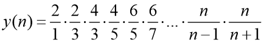 Проверить, является ли заданная строка палиндромом. Вычислить число сочетаний 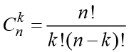 по формуле 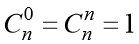, 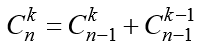 при n > 1, 0 < k < n. Вычислить 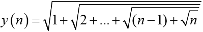 Вычислить значение 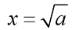, используя формулу 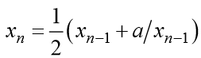, в качестве начального приближения использовать значение 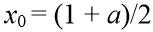. Вычислить элементы последовательности a(1)=1, a(n)=5*n-a(n-1), n>1 Вычислить 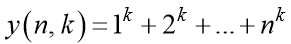 Вычислить 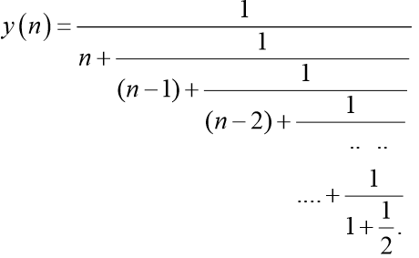 Подсчитать количество цифр в заданном числе. Вычислить 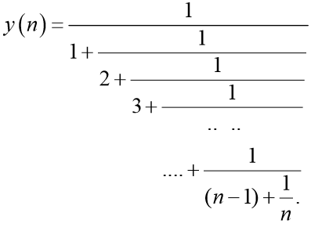 Вычислить значение интеграла (вводить необходимо a,b,n (n - целое число)Задание 2. Ввести с клавиатуры (сгенерировать) одномерный массив целых чисел. Решить задачу путем рекурсивного разбиения массива на две части. Для контроля решить задачу с использованием циклического алгоритма.
Найти количество отрицательных элементов массива. При рекурсивном разбиении массив делить на две половины. Найти сумму положительных элементов массива. При рекурсивном разбиении массив делить на первую треть и остальную часть (2/3) массива. Найти количество четных элементов массива. При рекурсивном разбиении массив делить на две половины. Найти количество элементов массива, значения которых больше 10 и меньше 20. При рекурсивном разбиении массив делить на первую треть и остальную часть (2/3) массива. Найти значение минимального элемента массива. При рекурсивном разбиении массив делить на две половины Определить, встречаются ли отрицательные элементы в массиве. При рекурсивном разбиении массив делить на первые 2/3 и остальную треть массива. Определить количество элементов массива, для которых выполняется условие sin(a[i]) > 0. При рекурсивном разбиении массив делить на две половины Определить количество элементов массива, для которых выполняется условие 0 < cos(a[i]) < 0.5. При рекурсивном разбиении массив делить на первые 2/3 и остальную треть массива Найти произведение отрицательных элементов массива. При рекурсивном разбиении массив делить на две половины. Найти сумму элементов массива, для которых выполняется условие a[i]2 >10. При рекурсивном разбиении массив делить на первые 2/3 и остальную треть массива. Определить, встречаются ли четные элементы в массиве. При рекурсивном разбиении массив делить на две половины. Найти произведение положительных элементов массива. При рекурсивном разбиении массив делить на первую треть и остальную часть (2/3) массива. Найти номер максимального элемента массива. При рекурсивном разбиении массив делить на первую треть и остальную часть (2/3) массива. Найти сумму элементов массива, значения которых больше 3 и меньше 10. При рекурсивном разбиении массив делить на первые 2/3 и остальную треть массива. Найти произведение нечетных элементов массива. При рекурсивном разбиении массив делить на первую треть и остальную часть (2/3) массива.Задание 3. Вычислить сумму ряда из задания 3 практической работы № 9 с применением рекурсии.
Критерии оценки (самооценки):